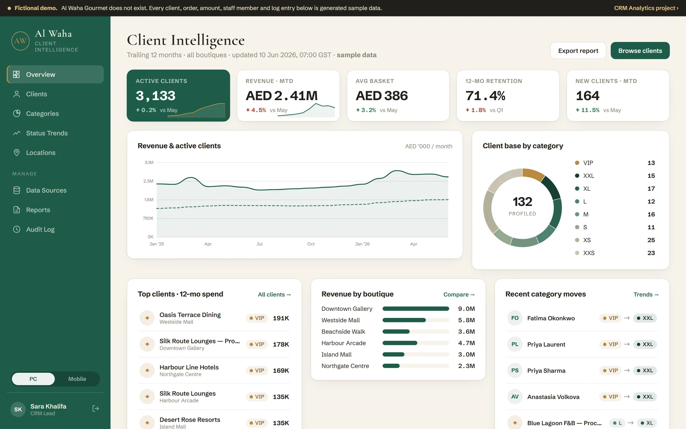
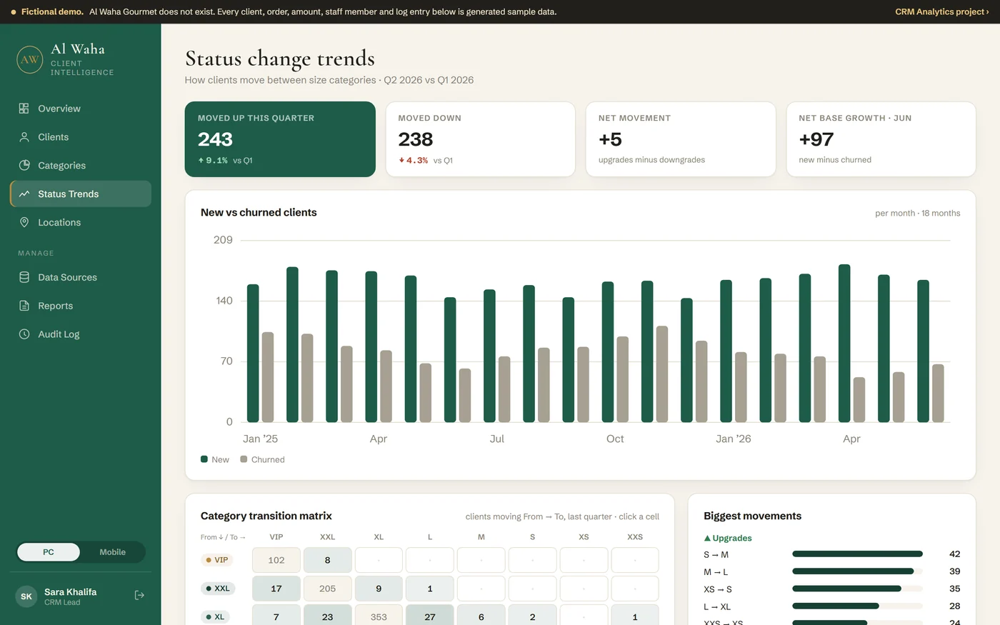

Who is actually worth keeping?
Every customer is sorted into one of eight value tiers by what they have spent over a rolling twelve months. The handful carrying your revenue stop being a hunch and become a list you can filter.
Most businesses treat their customer base as one crowd. This one sorts it into value tiers, watches who moves between them each month, and flags the good customers going quiet — while there is still time to call them.

A spreadsheet of every customer tells you who bought. It does not tell you who matters, who is leaving, or what to do on Monday morning.
Every customer is sorted into one of eight value tiers by what they have spent over a rolling twelve months. The handful carrying your revenue stop being a hunch and become a list you can filter.
Good customers rarely announce that they are leaving — they just order less often. A recency-and-frequency grid puts the frequent buyers who have gone cold in one cell, ready for a win-back call.
Tiers are recalculated every night, so movement is visible: who was promoted, who dropped, who came back after a year away. Growth stops being one number and becomes a direction.
In the demo dataset, the three largest tiers are 45 clients out of 132 — and they carry 89% of the money. Everything else is a long tail worth serving cheaply, not courting expensively.

A tier on its own is a photograph. What a business needs is the direction of travel — and last quarter, 243 clients moved up while 238 moved down. Almost a wash, and nobody would have felt it.
No data warehouse to buy, no modelling project to staff. Sales history in, a ranked customer base out.
Customers, products and transactions — a nightly file drop or the integration API. The demo ships both screens so you can see what each one asks for.
Every night, each customer is scored on recency, frequency and volume, then placed in a tier and marked active or not. The rules are written down and versioned, not buried in a dashboard.
Browse the base, open a client, see the tier and why they have it, and export the list. It works the same on a laptop and on a phone in a shop.
It is presented as a product because that was the exercise — but nothing here is for sale, there are no customers, and every client, order, amount and staff member in the demo was produced by a seeded generator. The figures quoted on this page are real readings from that fictional dataset, not claims about anybody’s business.
Yes. The demo opens on a sign-in screen because a real CRM would, but any email and any six-digit code get you in. There is nothing behind it to protect — the whole thing runs in your browser.
No. A seeded Python script invents the company, the customers, the products and five years of invoices. Email addresses use the .example domains reserved by RFC 2606, precisely so a generated record cannot reach a real inbox.
Net spend over a rolling twelve months, against thresholds you set. Recency and order frequency gate the top tiers, so a single large order does not buy VIP status, and length of relationship is carried separately rather than inflating the tier on its own.
The full rules are published in the business-logic spec.
A second surface, built from the same pipeline: the RFMT snapshot for 4,750 generated customers charted across twelve report months. It uses a different tier model from the portal because the two were built as separate artifacts — open it here and the difference is obvious. Merging them onto one model is the next piece of work.
Yes — it is MIT licensed. Clone the repository, run the generator, the build and the report script, and you have the whole thing locally. No server, no API key, no account.
The demo opens with the whole client base in front of you. Sort it, filter it, open somebody, and see the reasoning behind their tier.